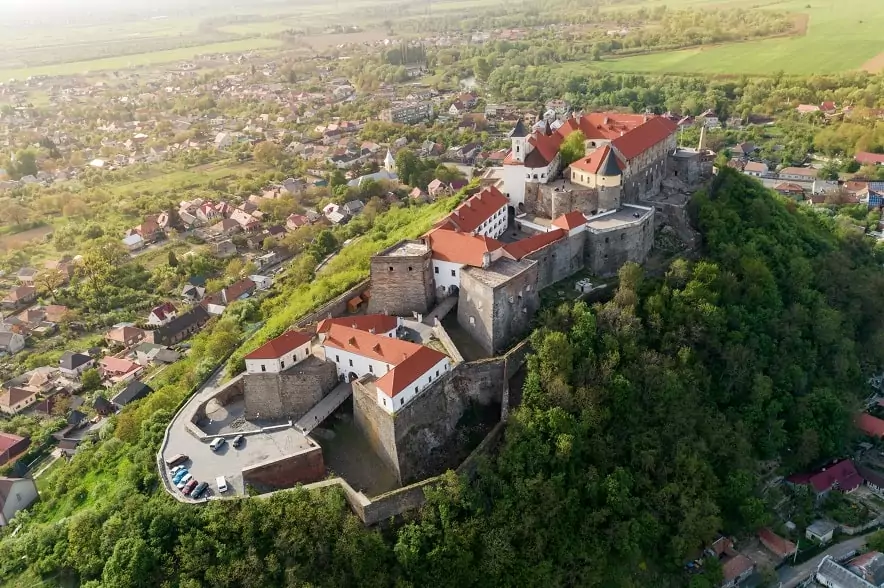

Тунель Кохання в Клевані
У селищі Клевань Рівненської області знаходиться незвичайна визначна пам’ятка – тунель Кохання. Це незвичайна алея, з обох сторін якої знаходяться дерева, переплетені зверху один з одним. Виглядає місце дійсно казково, воно красиве будь-якої пори року. Сюди приїжджають люди з усієї України, щоб помилуватися тунелем і зробити фото на пам’ять.
Уздовж тунелю пролягає залізниця, яка функціонує і досі. Вона з’єднує Оржівський деревообробний комбінат з селищем Клевань. Вантажний потяг проїжджає один-два рази на день і ламає маленькі гілочки дерев, які заважають руху. Таким чином утворюється гарна аркова форма з дерев, які переплітаються між собою.
Однак це ще не всі секрети тунелю. Дерева вздовж залізничного полотна висадили в радянські часи, щоб приховати від сторонніх очей секретну військову базу. З комбінату трамвай може їхати як до Клевані, так і до військового об’єкту. Тунелі знаходяться в безпосередній близькості один до одного.
Порада
Тунель Кохання в Клевані прекрасний будь-якої пори року. Восени приїжджайте до того, як листя опаде, взимку вирушайте з першим снігом, а в другій половині травня алея вся зелена!
Кам'янець-Подільська фортеця
Одна з небагатьох фортець c багатою історією, яка з упевненістю входить до списку must visit! Деякі історики стверджують, що фортифікаційна споруда існувала ще за часів Київської Русі. Можливо, на цьому місці дійсно була якась споруда, але саме кам’яна фортеця з’явилася набагато пізніше – в XIV столітті. Спорудили її за наказом представників княжого литовського роду Коріатовичів.
Фортеця знаходилася на в’їзді в місто, тому слугувала стратегічним оборонним пунктом. За час свого існування форпост пережив декілька штурмів та зміни влади. У XV столітті його захопили поляки, які замінили дерев’яні стіни на кам’яні. У XVII столітті замок захопили турки, потім його відвоювали поляки, але після розколу Речі Посполитої спорудження дісталося Російській імперії.
Замок разом з вежами та іншими важливими будівлями чудово зберігся. Щорічно тисячі туристів з Європи (крім періоду пандемії) і України приїжджають в Кам’янець-Подільський, щоб побачити грандіозну фортецю на власні очі.
Чим зайнятися
У майстерні гончара можна не тільки придбати вже готовий виріб, але й зліпити самому під керівництвом майстра.
Олешківські піски
Олешківські піски знаходяться в Херсонській області. Це найбільший піщаний масив в Україні, протяжністю понад 150 км. Цікаво, що ці красиві місця України, про яких мало хто знає, довгий час були недоступні для туристів. У епоху СРСР, частина території була закрита через розміщення на ній військового полігону для льотчиків. Після отримання незалежності, навчання припинилися, а ділянку з полігоном (близько 15 км в діаметрі) розмінували.
У 2010 році був створений природний національний парк «Олешківські піски». Через декілька років туристичні компанії почали організовувати тури в пустелю. Зараз цей напрямок користується величезною популярністю, адже не потрібно їхати за кордон, щоб на власні очі побачити безкрайні піски та красиві місця. Україна дуже різноманітна країна за ландшафтом і наявністю природних зон. Херсонська пустеля яскраво свідчить про це.

Чим зайнятися в Олешківських пісках
Ось кілька ідей: зробіть незвичайну фотосесію, організуйте пікнік, прогуляйтеся екологічними стежками та покатайтеся на квадроциклі
Бакота
Туристичні місця України без інфраструктури та майже без готелів знаходяться в Бакоті. Ця затока в південній частині Хмельницької області розташована в 55 км від уже згаданого вище Кам’янця-Подільського.
Назву місцевість отримала від однойменного села. Обов’язково відвідайте скельний монастир в Бакоті. Такі пам’ятки в Україні рідкість. По-перше, він функціонував ще в 11 столітті, а по-друге – розташований він у самій горі.
Чим зайнятися в Бакоті:
- покупатися в теплій воді
- взяти катамаран в оренду
- влаштувати барбекю
- приїхати на риболовство
- проводжати красиві заходи сонця
- сходити на екскурсію
Корисна інформація
У самій Бакоті готелів немає, беріть намети. Також запасайтеся продуктами заздалегідь. Найближчий сільський магазин в 3-х км від озера. Добиратися краще на позашляховику. Дорога далека від ідеального стану, але все компенсують неперевершені види та спокій навколо.
Тустань
Топ місць України для відвідування буде неповним, якщо не включити до нього Тустань. Залишки оборонного комплексу знаходяться в Карпатах, недалеко від села Урич на Львівщині. Це історичний, археологічний, архітектурний і природний пам’ятник.
У Середньовіччі фортеця Тустань відігравала значну роль. Вона була оборонним і адміністративним центром. Тут був митний пункт, який контролював соляний шлях з Дрогобича та Закарпаття в Європу.
Що цікавого в Тустані:
- унікальні петрогліфи та ритуальні вівтарі язичницької епохи
- залишки стін і зводів, сходи, печери та колодязь
- музей історії Тустані
- спеціальні цистерни в скелях для збору дощової води
Туристичні групи відправляються з Трускавця та Славського вихідними днями. Зупиниться можна в однойменному тризірковому готелі в с. Східниця.
На головнуБирючий острів
У топ гарних місць України можна сміливо внести острів Бирючий. Недарма ці заповідні місця облюбували українські президенти, які проводять тут відпустку. Ділянка суші в Азовському морі привертає чистими пляжами та незайманою природою.
Дістатися сюди можна водою з Генічеська або сушею через Федотову косу в Запорізькій області. З 1993 році Бирючий став частиною Азово-Сиваського національного парку, із загальною площею 33 тис. км². До речі, саме на острові мешкає найбільша популяція оленів. Їх можна побачити в багатьох точках.
Головною розвагою є море. Крім купання доступні такі активності:
- прогулятися на катамарані або байдарці
- здійснити прогулянку до озер і поспостерігати за водопоєм тварин
- влаштувати тематичну фотосесію
- придбати місцеві сувеніри
Озеро Синевир
Озеро Синевир є одним з найгарніших місць у Карпатах. Дістатися до нього можна з довколишніх сіл: Синевирська поляна, Залісся, Підманове, Шацьк. Скупатися на озері наважуються не всі, адже температура води не підіймається вище позначки в 11 градусів.
Що робити на озері:
- організувати пікнік
- покататися на плоті, підпливти до центру водойми
- зайнятися рафтингом на найближчій до озера річці Тереблі
- зробити фотосесію на фоні дивного пейзажу, який з’єднав у собі гори, ліс і воду
- походити по стежках, щоб побачити різноманітність місцевої флори та фауни
Водні пам’ятки в Україні мають свою легенду про походження назви озера. Колись гори належали одній заможній людині, у якого була вродлива дочка Синь. Вона закохалася в простого хлопця, на ім’я Вир, але батько дівчини був проти цих стосунків. Він наказав убити Вира, скинувши на молоду людину величезний камінь зі скелі. Коли Синь дізналася про це, обійняла камінь і почала плакати. З її сліз і утворилося озеро.
 На головну
На головну
Замок Паланок
Замок Паланок в Мукачево розміщений на горі висотою понад 60 метрів. Перше документальне підтвердження про нього датується XI століттям. У різний час замком володіли: Федір Коріатович, князь Ракоці, Йосип I, Шандор Петефі.
Звідки походить назва
Свою назву фортеця отримала через частокіл, яким було огорожено рів для додаткового захисту замку. Раніше дубовий частокіл називали планками
Одна з історій розповідає про появу колодязя на території стародавньої будівлі. Князь Коріатович наказав своїм працівникам викопати колодязь, але вони ніяк не могли дістатися води. Вночі до князя прийшов чорт з пропозицією: в колодязі з’явиться вода, якщо власник замку заплатить нечистому. Оскільки у казні не було грошей князь вирішив обдурити чорта й дав йому великий набитий мішок, у якому було всього дві золотих монети. Коли чорт викрив обман, то стрибнув з горя в колодязь. Вода там так і не з’явилася, а ось звуки розгніваного чорта іноді чутні.
Любителям середньовічної архітектури обов’язково сподобається замок Паланок, адже він досить добре зберігся. Піднявшись до будівлі, то згори можна побачити все місто.
У Мукачеві крім замку є й інші красиві пам’ятки: ратуша, костел Святого Мартіна, пам’ятник Кирилу та Мефодію та інші.
На головнуРожеві озера
Цікаві місця України доповнюють рожеві озера, розташовані на півдні країни. Далі ми розповімо про 4 найбільш відомих і відвідуваних водойм незвичайного кольору.
Біля озера Сиваш в Херсонській області на Арабатській Стрілці є невелика водойма з рожевою солоною водою. Це невідоме більшості українцям унікальне місце має назву Лемурійське озеро (або Мертве море). У воді озера міститься близько 35% солі, тому потонути тут неможливо.
Здалеку озеро має рожевий колір, але підійшовши ближче до берега вода здається мутнуватою. Такий відтінок ставок набуває завдяки одноклітинній водорості Дуналіелла Соловодна, що мешкає в такій солоній воді. На фото з правильного ракурсу водойма нагадує незвичайний марсіанський пейзаж.
Сюди приїжджають на вихідні туристи з дітьми, щоб навчити їх плавати. За своїм складом ставок нагадує Мертве море. Ропа та грязь водойми мають лікувальні властивості й корисно впливають на суглоби та шкіру.
Орієнтир – село Іванівка, Херсонська область. На фото при правильному ракурсі водойма також нагадує незвичайний марсіанський пейзаж. Водна рожева гладь зливається і ця чарівна краса заворожує своїми незвичайними пейзажами.
Порада
Територія тут не обладнана: ви не знайдете тут душових кабінок або альтанок для відпочинку. Якщо плануєте купатися, захопіть кілька пляшок з прісною водою для того, щоб потім змити сіль